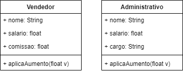
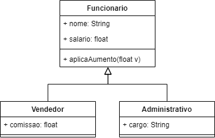
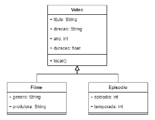
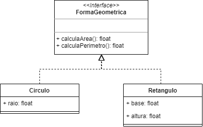
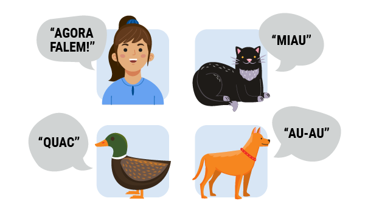

Como sugestão, configure a opção de leitura de caracteres e de pontuação de seu leitor de tela para o grau máximo de leitura, a fim de que os códigos disponibilizados neste material sejam lidos corretamente. No caso do NVDA (Nonvisual Desktop Access), para localizar a opção Grau de pontuação/símbolos, acesse Preferências – Configurações – Fala. Altere o padrão Pouco para Tudo. Dessa forma, o leitor passará a ler os segmentos de código em sua totalidade.
Como você já deve ter aprendido, diversos conceitos da programação fazem abstrações e comparações com o mundo real. Por exemplo, os conceitos de estrutura de dados contêm diversos paralelos com a vida real, como uma fila de pessoas, uma pilha de roupas etc. Isso acontece porque diariamente tenta-se resolver problemas reais e a melhor forma de alcançar esse objetivo é abstraindo conceitos reais para dentro do código-fonte.
Com a programação orientada a objetos não é diferente. No decorrer dos anos, foram criados conceitos que abstraem e relacionam a estruturação de um software com o mundo real. Esses conceitos visam a estruturar de maneira organizada o código-fonte, separando responsabilidades e simplificando o código.
Conheça agora alguns desses conceitos e entenda o seu uso e, mais importante, quando utilizá-los.
Figura 1 – A herança está no próprio ser humano, em seus genes
Fonte: Andrade (2013)
A imagem mostra a representação da evolução da espécie humana a partir de primatas com seis figuras, sendo a primeira de um macaco e a última de um homem.
O conceito de herança é muito comum na vida. A evolução das espécies, as características semelhantes entre uma criança e seus pais são apenas alguns dos diversos exemplos práticos de herança.
Na programação orientada a objetos, o conceito de herança é utilizado para que uma classe herde os comportamentos e as características de outra classe diferente.
Para facilitar a compreensão dos próximos tópicos, pense na relação do conceito de herança com o verbo ser. Por exemplo, se houver uma classe chamada Pessoa e uma classe chamada Aluno, relacionadas por meio do conceito de herança, será possível afirmar que um “aluno” é uma “pessoa”.
Quando se aplica o conceito de herança na programação orientada a objetos, cria-se uma relação de mãe e filha. A classe filha herda as características da classe mãe. Uma classe mãe é chamada de superclasse ou classe-base. Já uma classe filha é chamada de subclasse ou classe derivada.
Uma subclasse herda todos os métodos e atributos públicos (public) ou protegidos (protected) de sua superclasse, podendo sobrescrevê-los para alterar o comportamento. Já os métodos privados (private) da superclasse não são visíveis para a subclasse.
Para compreender melhor, observe o diagrama a seguir e também os gifs retirados dos sites Gifer (s.d.).
Figura 2 – Herança de uma classe robô (mais genérica) e classes que são derivadas dela
Fonte: Senac EAD (2022)
A imagem mostra um diagrama UML com classe “Robô”, atributos “Bateria” e “Fabricante”, métodos “Movimentar()” e “EvitarObstaculos()”. Abaixo, à esquerda, aparece a classe derivada “Robô Cheetah”, com método “Pular()”. Abaixo da classe “Robô”, à direita, está a classe derivada “Robô de Limpeza”, com atributo “HoraAgendada” e médodo “Aspirar()”.
A animação mostra um robô quadrúpede pulando um obstáculo.
A animação mostra um robô comum de limpeza percorrendo um corredor e mudando sua direção ao encontrar as paredes.
Os gifs mostraram o robô Cheetah, que, além das capacidades normais de robô, ainda pode pular, e o robô de limpeza, que, além de movimentar e evitar obstáculos, aspira e tem um agendamento para iniciar a limpeza. Nesse exemplo, Robô é classe mãe, Robô Cheetah e Robô Limpeza são classes filhas ou derivadas.
Antes de iniciar os conhecimentos sobre os códigos Java, relembre os conceitos de hierarquia de classes por meio do jogo a seguir. Caso queira reler esses conceitos, consulte o conteúdo “Orientação a Objetos”, desta unidade.
Neste momento, será criada a estrutura exemplificada anteriormente, de Pessoas e Alunos, utilizando o conceito de herança da programação orientada a objetos. Analise este código:
public class Pessoa {
public String nome;
public String cpf;
private String uuid;
public Pessoa() { }
}
Observe que está sendo criada uma classe Pessoa, que contém os atributos públicos "nome" e "cpf". Da mesma forma, a classe Pessoa contém o atributo privado "uuid" e tem um método construtor vazio.
Para os exemplos deste conteúdo, crie um projeto Java no NetBeans, implemente as classes e programe o método main() da classe principal, quando necessário. Se precisar, crie um projeto para cada exemplo ou um para cada subtítulo, para organizar seus estudos.
Agora, crie a classe Aluno. Essa classe será uma subclasse da classe Pessoa, herdando todos os seus métodos e atributos públicos ou protegidos. Confira o código a seguir:
public class Aluno extends Pessoa {
public String matricula;
public Aluno() { }
}
De forma básica, a classe Aluno tem apenas um atributo público chamado “matrícula”. Além disso, ela contém um método construtor vazio.
Agora, foque na sintaxe responsável pela definição de uma herança em Java. Por meio da palavra-chave extends, você define a relação de herança entre duas classes diferentes. Na definição da classe em questão, definiu-se que a classe Aluno extends (que em português significa estende) a classe Pessoa. Desta forma, a classe Aluno herda todos os métodos e atributos públicos ou protegidos da classe Pessoa. Veja este código:
Aluno fulano = new Aluno();
fulano.nome = "Fulano";
fulano.cpf = "000.000.000-00";
fulano.matricula = "123456";
Note que você está instanciando um objeto da classe Aluno. Como a classe Aluno é uma subclasse da classe Pessoa, todos os objetos instanciados da classe Aluno terão acesso a todos os atributos e métodos públicos ou protegidos da superclasse (neste caso, a classe Pessoa). Dessa forma, você consegue utilizar os atributos "nome" e "cpf", que não foram definidos na classe Aluno (classe que está sendo instanciada), mas sim na classe Pessoa, a superclasse desse exemplo.
Exemplo 1: implementando classes para representar funcionários de uma empresa, os quais têm nome e salário. Os funcionários podem ser vendedores, que também têm comissão, ou administrativos, aos quais é necessário indicar seu o cargo. A todos os funcionários é possível aplicar aumento. O seguinte diagrama UML representa as classes Vendedor e Administrativo separadamente.

Figura 3 – Classes Vendedor e Administrativo
Fonte: Senac EAD (2022)
A imagem mostra um diagrama para a classe “Vendedor”, com os atributos “nome: String”, “salario: float” e “comissão: float” e o método “aplicaAumento(float v)”. À direita, há uma diagrama para classe “Administrativo”, com os atributos “nome: String”, “salario: float”, “cargo: String” e o método “aplicaAumento(float v)”.
Pelo diagrama, nota-se a repetição nos atributos “nome” e “salário”, além do método aplicaAumento(). Isso e o contexto apresentado mostram indícios de que uma hierarquia de classes pode ser importante:

Figura 4 – Diagrama adaptado com hierarquia de classes (Vendedor e Administrativo derivam de
Funcionario)
Fonte: Senac EAD (2022)
Diagrama para classe “Funcionario” com os atributos “nome: String” e “salario: float” e o método “aplicaAumento(float v)”. Ligada por flecha de hierarquia à esquerda está a classe “Vendedor”, com “comissão: float”. Ligada à classe “Funcionario” por flecha de hierarquia à direita está um diagrama para a classe “Administrativo”, com o atributo “cargo: String”.
Em Java, é possível implementar as classes da seguinte maneira:
public class Funcionario {
public String nome;
public float salario;
public void aplicaAumento(float valor)
{
salario = salario + valor;
}
}
public class Vendedor extends Funcionario{
public float comissao;
}
public class Administrativo extends Funcionario {
public String cargo;
}
Na classe principal do projeto, no método main(), podem ser feitos alguns testes:
public static void main(String[] args) {
Vendedor joao;
Administrativo maria;
joao = new Vendedor();
joao.nome = "João Siqueira";
joao.salario = 1000;
joao.comissao = 10;
maria = new Administrativo();
maria.nome = "Maria Sá";
maria.salario = 1500;
maria.cargo = "Contadora";
System.out.println("Vendedor> Nome: " + joao.nome + ", salario: " + joao.salario + ", comissao: " + joao.comissao + "%");
System.out.println("Administrativo> Nome: " + maria.nome + ", salario: " + maria.salario + ", cargo: " + maria.cargo);
joao.aplicaAumento(500); //método definido na superclasse...
maria.aplicaAumento(300);//...que pode ser invocado pela classe derivada
System.out.println("Salário de " + joao.nome + " agora é " + joao.salario);
System.out.println("Salário de " + maria.nome + " agora é " + maria.salario);
}
Tanto “joao” (Vendedor) quanto “maria”( Administrativo) contêm os atributos “nome” e “salario” obtidos da classe Funcionario por meio da herança. Experimente apagar o trecho extends Funcionario da classe Vendedor e verifique que o código apresentará erro, acusando que os atributos “nome” e “salario” não existem para “joao”.
Crie em um programa Java uma aplicação que leia dados de cartões de débito e crédito. Use uma hierarquia de classes, considerando que
No programa, o usuário informará se o cartão que cadastrará é de crédito ou débito; em seguida, informará os dados desse cartão.
Expanda o programa do desafio anterior solicitando ao usuário um valor de compra. De acordo com o valor, mostre mensagem de erro se o limite estourar no crédito ou se o saldo for insuficiente no débito; mostre mensagem de sucesso caso contrário.
É muito comum a utilização de métodos construtores que permitam instanciar objetos de uma classe já com alguns atributos inicializados (isto é, com seu valor definido). Analise o exemplo a seguir:
public class Pessoa {
public String nome;
public String cpf;
public Pessoa(String _nome, String _cpf) {
this.nome = _nome;
this.cpf = _cpf;
}
}
Observe que, na classe Pessoa existe um método construtor que recebe os argumentos "nome" e "cpf", preenchendo, respectivamente, os atributos "nome" e "cpf" da classe no momento da criação da instância.
Agora, considerando o exemplo anterior da aplicação prática do conceito de herança (em programação orientada a objetos) em Java, como se pode inicializar os atributos da superclasse (a classe Pessoa) ao instanciar a classe Aluno? Confira este código:
public class Aluno extends Pessoa {
public String matricula;
public Aluno(String _nome, String _cpf, String _matricula) {
super(_nome, _cpf);
this.matricula = _matricula;
}
}
Como se pode ver, está sendo utilizado um método chamado super(). O método super() referencia o método construtor da superclasse (neste caso, da classe Pessoa). Dessa forma, os argumentos passados para o método super() são também conferidos aos atributos da superclasse para o novo objeto instanciado. Conheça mais sobre o método “super”?
Isso quer dizer que você pode acessar os métodos e atributos públicos e protegidos da subclasse por meio da superclasse? Não! Apenas o contrário. Na programação orientada a objetos, somente a subclasse herda os métodos e atributos públicos ou protegidos da superclasse. O contrário não é verdade.
Como visto anteriormente, a superclasse é o nome utilizado para representar a classe mãe em uma estrutura de herança na programação orientada a objetos. Em uma herança, as classes filhas (subclasses) herdam os atributos e métodos públicos ou protegidos da superclasse.
Ainda recordando o exemplo anterior, utiliza-se o método super() na subclasse para construir (utilizando o método construtor) a superclasse dentro (a partir) da subclasse. Isso acontece porque a palavra-chave "super" é utilizada para referenciar a superclasse dentro do contexto de uma subclasse.
Com isso, outros métodos da superclasse podem ser acessados a partir da subclasse, não se limitando apenas ao método construtor, como visto no exemplo apresentado. Confira o código a seguir:
public class Automovel {
private int potencia = 3;
public void imprimirDados() {
System.out.println("Potencia: " + potencia);
}
}
public class Carro extends Automovel {
private int consumo = 1;
public void imprimirDados() {
super.imprimirDados();
System.out.println("Consumo: " + consumo);
}
}
Note que há uma superclasse chamada Automovel, que contém um atributo privado chamado "potencia" (ou seja, um atributo não acessível pelas subclasses). Além disso, a superclasse contém um método público chamado imprimirDados().
Também há uma subclasse chamada Carro, com um atributo privado chamado "consumo" e um método público chamado imprimirDados(). Dentro do método, a palavra-chave chama-se "super" e, por meio dela, consegue-se acessar os atributos públicos ou protegidos da superclasse. Neste caso, está sendo chamado o método imprimirDados() da superclasse.
Dessa forma, consegue-se continuar utilizando um método da superclasse por meio da subclasse, apenas complementando o seu comportamento com algo extra (nesse caso, está sendo apresentado o valor do atributo "consumo", existente apenas na subclasse).
Exemplo 2: um serviço de streaming tem disponíveis em seu catálogo diversos filmes. Cada um tem dados como título, ano, diretor(a), gênero, duração e produtora responsável; cada vídeo é capaz de fazer “play” – ou “tocar”. Algum tempo depois, o serviço começou a oferecer séries e cada episódio tem informações como título, ano, diretor(a), número do episódio, temporada e duração do episódio, e também pode “tocar”.
Note que há uma porção de informações comuns entre filme e episódio, além do método tocar() presente em ambas as classes. Essa é uma situação propícia para aplicar herança: pode-se considerar ambos, genericamente, como “vídeos”. Em um diagrama UML, você teria o seguinte:

Figura 5 – Classe Video e suas derivadas Filme e Episodio
Fonte: Senac EAD (2022)
Diagrama da classe “Video” com os atributos “titulo: String”, “direcao: String”, “ano: int”, “duração: float” e o método “tocar()”. Setas de hierarquia ligam à esquerda com a classe “Filme”, com os atributos “gênero: String” e “produtora: String”. À direita, a hierarquia se liga com “Episodio”, com os atributos “episodio:int”, “temporada:int”.
Em Java, é possível criar as classes como o seguinte exemplo:
public class Video {
public String titulo;
public String direcao;
public int ano;
public float duracao;
public void tocar()
{
System.out.println("Executando o vídeo '" + titulo + "' dirigido por " + direcao);
}
}
public class Filme extends Video {
public String genero;
public String produtora;
}
public class Episodio extends Video {
public int episodio;
public int temporada;
}
No método principal do projeto, pode-se então criar instâncias de vídeos genéricos, de filmes e de episódios de séries.
public static void main(String[] args) {
Video v = new Video();
Filme f = new Filme();
Episodio e = new Episodio();
v.titulo = "Video generico";
v.direcao = "Francisco da silva";
v.ano = 2022;
v.duracao = 30;
f.titulo = "Aventuras nos Alpes";
f.direcao = "Joana da silva";
f.ano = 2000;
f.duracao = 120;
f.genero = "Aventura";
f.produtora = "Sun Films";
e.titulo = "Tecnologias perigosas";
e.direcao = "Joaquim da silva";
e.ano = 2021;
e.duracao = 45;
e.episodio = 5;
e.temporada = 1;
v.tocar();
f.tocar();
e.tocar();
}
Observe que existe acesso aos atributos de vídeo e ao método tocar(), presente apenas na classe Video.
Veja também que a instanciação seria facilitada com um método construtor que receba todas as informações de uma vez. Isso será feito na classe Video.
public class Video {
public String titulo;
public String direcao;
public int ano;
public float duracao;
public Video(String _titulo, String _direcao, int _ano, float _duracao)
{
this.titulo = _titulo;
this.direcao = _direcao;
this.ano = _ano;
this.duracao = _duracao;
}
public void tocar()
{
System.out.println("Executando o vídeo '" + titulo + "' dirigido por " + direcao);
}
}
Note agora que o projeto apresenta erro. As classes Filme e Episodio emitem a mensagem constructor Video in class Video cannot be Applied to given types (“construtor video na classe Video não pode ser aplicado aos tipos”). Isso ocorre porque, se uma superclasse implementa um construtor parametrizado, todas as suas classes derivadas também precisarão implementar uma versão desse construtor, como consta a seguir:
public class Filme extends Video {
public String genero;
public String produtora;
public Filme(String _titulo, String _direcao, int _ano, float _duracao)
{
super(_titulo, _direcao, _ano, _duracao);
}
}
A classe Filme ganha então um construtor com os mesmos parâmetros solicitados no construtor de vídeo; esse é o mínimo que se pode fazer para que o erro de compilação não ocorra mais. O comando super(_titulo, _direcao, _ano, _duracao); garante que o construtor da classe mãe seja chamado, preenchendo os atributos.
Evidentemente, o construtor na classe derivada pode também contar com parâmetros adicionais, como se vê a seguir para a classe Episodio, onde são incluídos os parâmetros “_episodio” e “_temporada”.
public class Episodio extends Video {
public int episodio;
public int temporada;
public Episodio(String _titulo, String _direcao, int _ano, float _duracao, int _episodio, int _temporada)
{
super(_titulo, _direcao, _ano, _duracao);
this.episodio = _episodio;
this.temporada = _temporada;
}
}
Com esses construtores, pode-se deixar o código presente no método principal do projeto mais compacto:
public static void main(String[] args) {
Video v = new Video("Video generico", "Francisco da silva", 2022, 30);
Filme f = new Filme("Aventuras nos Alpes", "Joana da silva", 2000, 120);
f.genero = "Aventura";
f.produtora = "Sun Films";
Episodio e = new Episodio("Tecnologias perigosas", "Joaquim da silva", 2021, 45, 5, 1);
v.tocar();
f.tocar();
e.tocar();
}
Um ponto interessante sobre hierarquia de classes é o de que se pode referenciar um objeto de um tipo derivado pelo tipo de sua superclasse. Nesse projeto, por exemplo, é possível referenciar o filme f com uma variável de referência do tipo Video, desta maneira (inclua o trecho ao final do código em main() para testar):
Video referencia1 = f;
referencia1.tocar();
Video referencia2 = new Episodio("Série clássica", "João da silva", 1980, 30, 2, 2);
referencia2.tocar();
É importante notar, contudo, que usando as variáveis “referencia1” e “referencia2”, não se pode alcançar os atributos e métodos próprios de Filme e Episodio, já que essas variáveis têm o formato da classe mãe.
referencia1.genero = "Teste";//erro
referencia2.episodio = 1;//erro
Qual é a vantagem então de se usar o tipo da superclasse como referência? Em alguns casos, podem ser usadas as assinaturas providas pela superclasse sem a preocupação sobre qual a instância está executando. Por exemplo, imagine uma playlist em que estarão filmes e episódios misturados. Não importa o que estiver na playlist, ela tocará um vídeo após o outro. Assim, seria possível usar uma lista de vídeos da seguinte maneira (inclua o trecho ao final do código em main() para testar):
Video[] playlist = new Video[5];
playlist[0] = v; // um vídeo genérico
playlist[1] = f; // um filme
playlist[2] = e; // um episódio
playlist[3] = referencia2; //outro episódio
playlist[4] = new Filme("Filme clássico", "José da silva", 1970, 130);
System.out.println("Tocando playlist: ");
for(int i=0; i< playlist.length; i++)
{
//não importa se é vídeo, filme ou episódio, dê o play!
playlist[i].tocar();
}
Assista agora um vídeo que mostra um a criação de um projeto para testar Hierarquia de classes
Tela inicialUtilizou-se bastante o modificador public e algumas vezes o private em atributos e métodos dos exemplos apresentados até este momento. Como se sabe, public deixa o atributo ou método aberto para acesso a partir de qualquer outra classe e private fecha o atributo ou método apenas para a própria classe – inclusive se essa classe for derivada. Considere a classe Pessoa implementada anteriormente. Proteja o atributo “cpf”, marcando-o como private. Inclua também um método público mostraDadosPessoa():
public class Pessoa {
public String nome;
private String cpf;
public Pessoa(String _nome, String _cpf) {
this.nome = _nome;
this.cpf = _cpf;
}
public void mostraDadosPessoa()
{
System.out.println("Pessoa: " + nome + " cpf: " + cpf);
}
}
Observe que o acesso dentro da classe Pessoa é livre. Inclusive, se houver um objeto do tipo “Aluno”, que é derivado de Pessoa, invocando mostraDadosPessoa(), isso não será um problema (teste o código a seguir no método main da classe principal do seu projeto):
public static void main(String[] args) {
Aluno a = new Aluno("José", "00100200304", "12345");
a.mostraDadosPessoa();//sem erros
}
Ao executar, note que a resposta é impressa na tela normalmente. No entanto, tente agora implementar um método mostraDadosAluno() na classe Aluno:
public class Aluno extends Pessoa {
public String matricula;
public Aluno(String _nome, String _cpf, String _matricula) {
super(_nome, _cpf);
this.matricula = _matricula;
}
public void mostraDadosAluno()
{
System.out.println("Aluno: " + nome +
" cpf: " + cpf + //erro: "cpf has private access in Pessoa"
" matricula: "+ matricula);
}
}
O IDE (ambiente de desenvolvimento integrado) já acusará erro (automaticamente ou ao compilar o projeto) indicando que “cpf” está bloqueado na classe Pessoa.
Para situações em que é necessário expor algum atributo ou método de uma superclasse para suas classes derivadas ou classes que estejam no mesmo pacote, mas manter o bloqueio para as demais classes, pode-se usar o modificador de acesso protected.
Aplique o modificador protected à classe Pessoa.
public class Pessoa {
public String nome;
protected String cpf;
public Pessoa(String _nome, String _cpf) {
this.nome = _nome;
this.cpf = _cpf;
}
public void mostraDadosPessoa()
{
System.out.println("Pessoa: " + nome + " cpf: " + cpf);
}
}
A partir de agora, o método mostraDadosAluno() na classe Aluno já não gera mais falhas, uma vez que a classe Aluno é derivada de Pessoa e, portanto, contém acesso a “cpf”.
public static void main(String[] args) {
Aluno a = new Aluno("José", "00100200304", "12345");
a.mostraDadosPessoa();//sem erros
a.mostraDadosAluno();//sem erros
}
Por outro lado, o acesso a partir de classes não derivadas e em outros pacotes continua bloqueado. Você pode testar criando uma nova classe em um novo pacote no projeto NetBeans.
import hierarquia2.Pessoa;
public class NewClass {
public void testeAcesso()
{
Pessoa p = new Pessoa("Maria", "11122233344");
System.out.println(p.cpf);//erro
}
}
Nesse trecho, “hierarquia2” é o nome do pacote no projeto usado para a escrita deste exemplo. Adapte com o nome do pacote principal presente em seu projeto.
Uma classe abstrata é uma categoria especial de classe. Isso porque não se pode instanciar objetos de uma classe abstrata, como usualmente se faz com uma classe normal. Uma classe abstrata funciona como um "modelo" para outras classes, um "protocolo" a ser seguido.
Figura 6 – Árvores
Fonte: Freepik (c2010-2022)
A imagem contém a ilustração de trinta e duas árvores diferentes uma da outra, dispostas em cinco fileiras.
A imagem mostra diferentes árvores que, se representadas em orientação a objetos, poderiam derivar de uma classe abstrata Árvore, que apenas dita as características mais gerais de uma árvore.
Entende-se que árvores seguem um modelo de abstração. Todas as árvores contêm características e comportamentos em comum, o que permite identificar o que é uma árvore ou não, sem precisar conhecer todas as espécies de árvores.
A utilização de uma classe abstrata traz um novo conceito para a programação orientada a objetos. Trata-se dos métodos concretos e abstratos.
Métodos concretos são os métodos já conhecidos e utilizados diversas vezes. Já os métodos abstratos são, assim como as classes abstratas, apenas "modelos", "protocolos", e não contêm uma implementação/comportamento. Analise o código a seguir.
public abstract class Conta {
private double saldo;
public void setSaldo(double saldo) {
this.saldo = saldo;
}
public double getSaldo() {
return saldo;
}
public abstract void imprimirExtrato();
}
Note que há uma nova palavra-chave: abstract (em português, “abstrato”). Essa palavra-chave indica que o respectivo componente é um componente abstrato. No caso do código de exemplo, a classe Conta e o método imprimirExtrato() são abstratos. Além das abstrações, ainda há uma propriedade e dois métodos concretos, sendo a propriedade "saldo" e os métodos getSaldo() e setSaldo(), com definições bastante comuns.
Já o método imprimirExtrato(), como se pode ver, não contém uma implementação. Nele, definiu-se o nível de acesso (public), utilizou-se a palavra-chave abstract (para declarar o método como abstrato), definiu-se o retorno do método (neste caso, void) e, então, definiu-se o nome do método (imprimirExtrato()). Normalmente, a seguir, ocorreria a implementação do método, implementando o seu comportamento. Mas, no caso de um método abstrato, isso não ocorre, pois, como dito anteriormente, métodos abstratos são apenas modelos a serem seguidos, eles não podem ser usados diretamente.
Experimente incluir em main() uma instanciação da classe abstrata Conta.
Conta minhaConta = new Conta();
Uma mensagem de erro deve ser emitida pelo IDE, informando a impossibilidade de instanciação: Conta is abstract; cannot be instantiated (o que significa “Conta é abstrata; não pode ser instanciada”).
Mas como se pode utilizar uma classe abstrata se não é possível instanciá-la? Resumidamente, é preciso criar uma ou mais classes que estendem (herdam) a classe abstrata. Veja este exemplo:
public class ContaCorrente extends Conta {
@Override
public void imprimirExtrato() {
System.out.println("Imprimindo extrato da conta...");
System.out.println(" - Saldo: " + this.getSaldo());
}
}
Observe que foi criada uma classe ContaCorrente, que estende (herda) a classe modelo (a classe abstrata) Conta.
Essa nova classe ContaCorrente herda (como se aprendeu na seção passada) todos os métodos concretos da superclasse (neste caso, da classe abstrata Conta). Ou seja, os métodos getSaldo() e setSaldo() estão disponíveis para uso nos objetos que instanciam a classe ContaCorrente, executando o mesmo comportamento definido e implementado na superclasse (a classe abstrata).
Já o método abstrato imprimirExtrato() deve ser sobrescrito para tornar-se um método concreto (e, logo, poder ser utilizado), uma vez que ele não tem código na superclasse. Tornar o método concreto, portanto, significa basicamente preenchê-lo com código executável e torná-lo utilizável.
Para isso, é necessário utilizar uma anotação chamada @Override (que significa “sobrescrever”) sobre a declaração do método. A partir dessa definição, haverá um método concreto que, assim como os métodos getSaldo() e setSaldo(), pode ser utilizado pelos objetos que instanciarem a classe ContaCorrente.
Exemplo 3: uma empresa precisa emitir relatórios periódicos de vendas e de gastos. Os relatórios seguem um padrão de cabeçalho e rodapé e todos utilizam informações com nome da empresa e sumarização de valores. Que tal programar uma aplicação Java que esboce uma solução para essa situação?
Considere uma classe-base Relatorio. Ela garantirá um cabeçalho e rodapé padrões, além das informações extras.
public abstract class Relatorio {
public String nomeEmpresa;
protected float total;
public String emiteCabecalho() {
return nomeEmpresa + "\n-------";
}
public String emiteRodape() {
return "\nTotal:" + total + "\n-------\nEste relatório é confidencial";
}
public abstract void emiteRelatorio();
}
Agora há uma classe abstrata Relatorio com dois métodos concretos e um abstrato.
Primeiramente, crie o relatório de vendas e, para isso, utilize uma classe auxiliar:
public class Venda {
public float valor;
public String cliente;
public Venda(float _valor, String _cliente) {
this.valor = _valor;
this.cliente = _cliente;
}
}
Agora, crie uma classe RelatorioVenda, que estenderá a classe Relatorio.
public class RelatorioVenda extends Relatorio{
public Venda[] vendas = null;
}
A classe contará com uma lista de vendas, que será usada na montagem do relatório. Note que, nesse momento, a classe emite erro solicitando que se implemente o método abstrato emitirRelatorio(), implementado a seguir:
public class RelatorioVenda extends Relatorio{
public Venda[] vendas = null;
@Override
public void emiteRelatorio() {
float totalVendas = 0;
System.out.println("RELATORIO DE VENDAS");
System.out.println(super.emiteCabecalho());
if(vendas != null) {
for(Venda v : vendas) {
System.out.println(v.cliente + " - R$" + v.valor);
totalVendas += v.valor;
}
}
this.total = totalVendas;
System.out.println(super.emiteRodape());
}
}
O método inicia mostrando o cabeçalho segundo o método emitirCabecalho() definido na superclasse, depois percorre a lista de vendas, sumarizando os valores. Essa soma é passada ao atributo “total” definido também em Relatorio. Por fim, é mostrado o rodapé definido por emiteRodape() de Relatorio.
Você pode testar com o seguinte código em main() da classe principal do projeto:
public static void main(String[] args) {
RelatorioVenda relVendas = new RelatorioVenda();
relVendas.vendas = new Venda[]{new Venda(100, "Maria"), new Venda(150, "Joao"), new Venda(100, "Antonio")};
relVendas.nomeEmpresa = "Empresa XYZ S.A.";
relVendas.emiteRelatorio();
}
Ao executar, você poderá ver na tela a listagem das vendas realizadas. Note que a criação de um objeto do tipo “Relatorio” gera falha, já que se trata de uma classe abstrata.
Relatorio rel = new Relatorio();//erro
//"Relatorio is abstract; cannot be instantiated"
// ou "Relatorio é abstrato e não pode ser instanciado"
De maneira análoga, é possível criar uma classe Compras, com o valor e a descrição do gasto, e uma RelatorioCompras, estendendo Relatorio e implementando emiteRelatorio().
Assista agora um vídeo que continua demonstrando a criação de um projeto para testar Hierarquia de classes
Tela inicialInterfaces são relativamente semelhantes a classes abstratas. Enquanto uma classe abstrata define métodos abstratos (servindo como um modelo para as subclasses – que herdam os seus métodos), uma interface é um "contrato", definindo um conjunto de métodos que serão implementados. Dessa forma, uma interface é completamente abstrata (não contém nenhum método concreto, diferente de uma classe abstrata).
Uma classe só pode herdar uma única superclasse. Assim, quando se trabalha com classes abstratas, pode-se estender apenas uma classe abstrata, herdando os seus comportamentos e implementando os seus métodos abstratos.
Agora, quando se fala sobre interfaces, uma classe pode implementar diversas delas.
Por exemplo, imagine um canivete suíço: ele pode cortar como uma faca, abrir garrafas, abrir latas, sacar rolhas, serrar e furar. Se você tentar abstrair isso para dentro de um código, poderia ter uma interface para cada comportamento, definindo os seus respectivos métodos (por exemplo, a interface faca pode cortar e afiar, enquanto a interface saca-rolha pode sacar uma rolha) e criar uma única classe CaniveteSuico, que implementará todas essas interfaces.
Confira um exemplo, analisando o seguinte código.
public interface AppDAO {
public void salvar(Object registro);
public void atualizar(Object registro);
public void deletar(int id);
public Object buscar(int id);
public List<Object> listar();
}
Para criar interface em projeto NetBeans, clique com o botão direito do mouse no pacote em que deseja criar e depois em New > Java Interface.
Note que a interface não contém nenhuma implementação. Todos os métodos são como os métodos abstratos. Porém, como você está trabalhando com uma interface (e não uma classe abstrata), não é preciso utilizar a palavra-chave abstract para definir que esses métodos são abstratos.
No exemplo, você está criando uma interface AppDAO, que cria um contrato especificando os métodos necessários para caracterizar uma classe como um Data Access Object (DAO).
DAO, acrônimo de Data Access Object (que significa “objeto de acesso a dados”), é um conceito de programação, sendo um padrão para persistência de dados, no qual todas as funcionalidades de bancos de dados devem ser feitas por classes DAO.
Agora, crie uma classe que implemente o contrato AppDAO. Veja este código:
public class FuncionarioDAO implements AppDAO {
@Override
public void salvar(Object registro) {
System.out.println("Funcionário salvo!");
}
@Override
public void atualizar(Object registro) {
System.out.println("Funcionário atualizado!");
}
@Override
public void deletar(int id) {
System.out.println("Funcionário deletado!");
}
@Override
public Object buscar(int id) {
System.out.println("Funcionário não encontrado!");
return null;
}
@Override
public List<Object> listar() {
System.out.println("Nenhum funcionário cadastrado!");
return null;
}
public void verificarFerias(int id) {
System.out.println("Funcionário possui 10 dias de férias remuneradas!");
}
}
A primeira diferença que se pode notar está na definição da classe. A classe FuncionarioDAO está implementando (e isso é definido pelo uso da palavra-chave implements) a interface AppDAO.
Além disso, todos os métodos abstratos existentes na interface AppDAO devem ser obrigatoriamente implementados na classe, já que ela está implementando a interface AppDAO (logo, o contrato deve ser seguido).
Todos os métodos abstratos da interface devem ter a anotação @Override (a mesma utilizada nas subclasses das classes abstratas). Como agora existem classes concretas, é preciso implementar o comportamento de todas as classes abstratas.
Por último, você pode implementar métodos "extras", que não foram previamente definidos na interface. É o caso do método verificarFerias(), que não existe na interface AppDAO, porém existe na classe FuncionarioDAO.
Exemplo 4: criar um programa Java para cálculo de área e perímetro de uma forma geométrica. Toda forma deve conseguir realizar ambos os cálculos; não há informação comum entre as formas. A princípio, serão implementados “círculo” e “retângulo”. Trata-se de um caso em que se torna interessante o uso de interfaces, já que o que se quer em comum entre as classes são comportamentos e não dados.

Figura 7 – Diagrama de classes para a solução de formas geométricas
Fonte: Senac EAD (2022)
A imagem mostra um diagrama de classe “<<interface>> FormaGeometrica”, com métodos “calculaArea():float”, “calculaPerimetro():float”. Abaixo, com flecha tracejada, conectam-se a “FormaGeometrica” à classe “Circulo”, com atributo “raio:float”, e à classe “Retangulo”, com atributos “base:float” e “altura:float”.
Circulo e Retangulo são classes concretas que implementam a interface FormaGeometrica. Em um novo projeto Java, crie a interface FormaGeometrica.
public interface FormaGeometrica {
public float calculaArea();
public float calculaPerimetro();
}
Depois, pode-se implementar a interface FormaGeometrica nas classes Circulo e Retangulo:
public class Circulo implements FormaGeometrica {
private double raio;
public double getRaio() {
return raio;
}
public void setRaio(double raio) {
this.raio = raio;
}
/*implementações de FormaGeometrica*/
@Override
public double calculaArea() {
return Math.PI * raio * raio;
}
@Override
public double calculaPerimetro() {
return 2 * Math.PI * raio;
}
}
public class Retangulo implements FormaGeometrica{
private double base;
private double altura;
public double getBase() {
return base;
}
public void setBase(double base) {
this.base = base;
}
public double getAltura() {
return altura;
}
public void setAltura(double altura) {
this.altura = altura;
}
/*implementações de FormaGeometrica*/
@Override
public double calculaArea() {
return base * altura;
}
@Override
public double calculaPerimetro() {
return 2 * (base + altura);
}
}
É possível testar com o seguinte código no método main() do projeto:
public static void main(String[] args) {
Circulo c = new Circulo();
c.setRaio(5.0);
System.out.println("Area do círculo: " + c.calculaArea());
Retangulo r = new Retangulo();
r.setAltura(10);
r.setBase(5);
System.out.println("Area do quadrado: " + r.calculaArea());
FormaGeometrica formas[] = new FormaGeometrica[2];
formas[0] = c;
formas[1] = r;
for(int i=0; i<formas.length; i++)
{
System.out.println("Area da forma " + i +": " + formas[i].calculaArea());
System.out.println("Perímetro da forma " + i +": " + formas[i].calculaPerimetro());
}
}
Você pode criar um vetor genérico de formas geométricas e percorrê-lo invocando os métodos previstos pelo contrato da interface FormaGeometrica, sem se preocupar se o item é um círculo ou retângulo – se eles implementam FormaGeometrica, tenha certeza de que eles sabem calcular a área e o perímetro da forma.
Assista agora um vídeo que continua demonstrando o projeto que explora a Hierarquia de classes
Tela inicialComo descoberto antes, diferentemente das classes abstratas, as interfaces podem ser implementadas em conjunto. Ou seja, uma classe pode implementar mais de uma interface ao mesmo tempo. Qual tal recriar o exemplo anterior da interface de DAO, mas utilizando o conceito de múltiplas interfaces?
Nesse exemplo, o objetivo será criar duas interfaces diferentes: query e command. Ambas são outros dois conceitos da programação, sendo query para representar operações de leitura e command para representar operações de mutação (inserir, alterar ou remover).
Assim, identifica-se que a interface DAO pode ser dividida em duas interfaces, uma query e uma command. A interface query especificará todas as funções de leitura, enquanto a interface command especificará as funções de mutação.
Esses conceitos (DAO, query e command) são amplamente utilizados em projetos de software. Os três abrangem o mesmo princípio de qualidade de software, chamada "separação de responsabilidades". Você aprenderá mais sobre isso em breve.
Seguindo esse novo exemplo, observe o código a seguir:
public interface AppQuery {
public Object buscar(int id);
public List<Object> listar();
}
public interface AppCommand {
public void salvar(Object registro);
public void atualizar(Object registro);
public void deletar(int id);
}
Veja que agora existem duas interfaces, em vez de apenas uma. A nova interface AppQuery ficou responsável pela especificação dos métodos abstratos buscar() e listar(), mantendo a mesma assinatura que se tinha na interface AppDAO. Já a nova interface AppCommand ficou responsável pela especificação dos métodos abstratos salvar(),atualizar() e deletar(), mantendo também a mesma assinatura que se tinha na interface AppDAO.
Se você juntar as duas interfaces novas, terá exatamente o mesmo contrato que tinha na antiga interface AppDAO.
Agora, crie uma classe que implementará as duas interfaces, AppQuery e AppCommand. Confira o seguinte código:
public class FuncionarioDAO implements AppQuery, AppCommand {
@Override
public void salvar(Object registro) {
System.out.println("Funcionário salvo!");
}
@Override
public void atualizar(Object registro) {
System.out.println("Funcionário atualizado!");
}
@Override
public void deletar(int id) {
System.out.println("Funcionário deletado!");
}
@Override
public Object buscar(int id) {
System.out.println("Funcionário não encontrado!");
return null;
}
@Override
public List<Object> listar() {
System.out.println("Nenhum funcionário cadastrado!");
return null;
}
public void verificarFerias(int id) {
System.out.println("Funcionário possui 10 dias de férias remuneradas!");
}
}
Como se pode ver, está sendo utilizado o mesmo código do exemplo anterior (utilizando a interface AppDAO). Entretanto, desta vez, estão sendo implementadas duas interfaces ao mesmo tempo (as duas novas interfaces, AppQuery e AppCommand). Como a assinatura dos métodos permaneceu igual, o corpo da classe permanece o mesmo.
Crie um programa orientado a objeto que implemente pelo menos três partes diferentes de um carro (exemplo: motor, janelas e rádio). Para cada funcionalidade, apenas imprima uma linha descrevendo a ação que está sendo realizada. Utilize interfaces para concluir este desafio.
Agora, você já sabe as diferenças entre classes abstratas e interfaces e como utilizá-las. Conheça, neste momento, algumas estratégias e técnicas muito utilizadas em projetos de software e que requisitam a utilização de abstrações para funcionar.
Você pode juntar uma herança à implementação de interfaces. Basta criar uma classe, estendê-la (usando a palavra-chave extends) de uma outra classe (a superclasse) e também implementar as interfaces desejadas (usando a palavra-chave implements).
Na programação orientada a objetos, polimorfismo é o conceito no qual você pode alcançar comportamentos diferentes por meio da mesma interface. Seguindo o significado da palavra "polimorfo", um método ou uma classe polimorfa é uma classe que pode se passar por outras, adotando diferentes comportamentos dependendo do seu contexto. Uma forma prática de entender esse conceito é imaginar que um mesmo método pode ter diferentes versões.
Existem duas formas principais para implementar o conceito de polimorfismo: polimorfismo estático e polimorfismo dinâmico. Conheça um pouco mais sobre cada um:
Seguindo o conceito de polimorfismo, o polimorfismo estático é uma forma de adicionar diferentes comportamentos para o mesmo método. O fato de ser estático significa que o compilador consegue determinar qual comportamento/versão será executado.
Em seguida, você aprenderá que existe outro tipo de polimorfismo, no qual só é possível validar qual comportamento/versão será executado em tempo de execução (isto é, executando o código-fonte).
O polimorfismo estático também é conhecido como polimorfismo em tempo de compilação (em inglês, compile-time polymorphism), ligação estática (static binding), ligação em tempo de compilação (compile-time binding), ligação precoce (early binding) e sobrecarga de método (method overloading) – sendo esta última a forma mais comum.
Existem diversas formas diferentes de realizar um polimorfismo estático, dependendo do kit de recursos da linguagem de programação utilizada. A única regra é que a implementação deve atender ao conceito. Ou seja, deve ser possível determinar qual comportamento será executado (do método ou classe polimorfo) ainda no compilador (sem a necessidade de executar o código).
Uma das formas mais conhecidas de polimorfismo em Java é a sobrecarga de método. Nela, você pode implementar diversos métodos com o mesmo nome dentro da mesma classe, mudando apenas o conjunto de argumentos do método. Para isso funcionar, os argumentos do método devem ser diferentes em pelo menos um dos três critérios a seguir:
Nessa estratégia, devido ao diferente conjunto de argumentos, cada método tem uma assinatura diferente. Isso permite que o compilador identifique qual método deve ser chamado (de acordo com os argumentos providos) e o vincule à chamada do método, sendo determinado o comportamento que será executado ainda no compilador.
Confira o exemplo no código a seguir:
class Calculadora {
int somar (int a, int b) {
return a + b;
}
int somar (int a, int b, int c) {
return a + b + c;
}
}
Nesse exemplo, note que foi criada uma classe Calculadora com o método somar(). Definiu-se o método duas vezes, porém com o conjunto de argumentos diferentes.
A primeira versão do método somar() espera receber dois argumentos do tipo int (números inteiros), chamados de "a" e "b". Já a segunda versão do método espera receber três argumentos do tipo int, chamados de "a", "b" e "c".
Este é um exemplo simples do conceito de sobrecarga de método. Se você instanciar a classe Calculadora e executar o método .somar() passando apenas dois números inteiros como argumento, o compilador já identificará que está sendo utilizada a primeira versão (que espera receber dois argumentos). Agora, se você executar o método .somar() passando três números inteiros como argumento, o compilador identificará que está sendo utilizada a segunda versão (que espera receber três números inteiros).
Agora veja este outro exemplo:
class Usuario {
void seguir (Usuario usuario) {
// Seguir um usuário novo
}
void seguir (Comunidade) {
// Seguir uma comunidade
}
void seguir (Hashtag) {
// Seguir uma hashtag
}
}
Nesse caso, há um hipotético usuário de rede social, que pode seguir usuários, comunidades e hashtags. A sobrecarga de método está sendo feita sobre o método .seguir(), mudando apenas a sua assinatura, indicando se é um usuário, uma comunidade ou uma hashtag que está sendo seguida. Dessa forma, é possível adotar comportamentos diferentes de acordo com os argumentos providos.
Crie um programa orientado a objetos que simule uma autenticação. Aplique sobrecarga de método para validar com login e senha ou com número de celular e código numérico. Não se preocupe em validar a autenticidade, apenas apresente uma mensagem de sucesso dizendo qual método de autenticação foi usado (senha ou código).
Como dito anteriormente, existe outro tipo de polimorfismo, no qual só é possível validar qual comportamento/versão será executado em tempo de execução (isto é, executando o código-fonte). Esse formato de polimorfismo é conhecido como polimorfismo dinâmico.
Como ele, o compilador não consegue determinar a versão/comportamento que será executada de um método ou classe polimorfa. Nesse cenário, a diferença existe apenas no tempo de execução, ou seja, é um cenário muito comum e utilizado em alguns conceitos de boas práticas, que serão estudados futuramente, como na injeção de dependências.
O polimorfismo dinâmico também é conhecido como:
Para o polimorfismo dinâmico funcionar, suponha que existam diferentes métodos com a mesma assinatura (isto é, métodos que recebem os mesmos argumentos e retornam o mesmo tipo de dado), sendo cada método em uma classe diferente. Para caracterizar o polimorfismo dinâmico, cada classe deverá (1) herdar da mesma superclasse ou (2) implementar a mesma interface ou classe abstrata.
Assim como no polimorfismo estático, existem diversas técnicas para atingir o objetivo do polimorfismo dinâmico, dependendo dos recursos providos pela linguagem de programação em uso. No Java, é muito comum a utilização da técnica de sobreposição de método. Para exemplificar um cenário, observe a imagem a seguir.

Figura 8 – Exemplo de polimorfismo com a ação “Falar”
Fonte: Adaptado de Ediriweera (2017)
A imagem contém um homem falando "Agora falem!" para um cachorro, um pato e um gato. O cachorro está respondendo "Au-au", o pato está respondendo "Quac" e o gato está respondendo "Miau".
Note que todos os objetos são animais e que cada um “fala” de uma maneira específica. Essa imagem é um exemplo de sobreposição de método, uma estratégia para alcançar o polimorfismo dinâmico. Nele, estão três animais diferentes: um cachorro, um pato e um gato. Os três animais são capazes de se comunicar (no programa, esse método é chamado de "falar"), porém cada animal comunica-se de uma forma diferente.
Que tal trazer esse exemplo da vida real para código? Analise o código a seguir:
class Animal {
public void falar (){
System.out.println("???");
}
}
class Cachorro extends Animal {
public void falar () {
System.out.println("Au au");
}
}
class Pato extends Animal {
public void falar () {
System.out.println("Quack");
}
}
class Gato extends Animal {
public void falar () {
System.out.println("Miau");
}
}
Transformando esse exemplo em código, há uma superclasse chamada Animal e três subclasses chamadas Cachorro, Pato e Gato. A superclasse e as subclasses tem um método falar com a mesma assinatura (sem argumentos de entrada e com o mesmo retorno void), porém cada subclasse contém um comportamento específico.
Agora serão utilizadas as classes:
public class MeuProjeto {
public static void main(String args[]) {
Animal cachorro = new Cachorro();
Animal pato = new Pato();
Animal gato = new Gato();
cachorro.falar(); // "Au au"
pato.falar(); // "Quack"
gato.falar(); // "Miau"
}
}
Note que os três objetos são do tipo “Animal”. Isso implica que, caso alguma outra função do programa precise receber algum animal, todos os três objetos são argumentos válidos para serem utilizados. Porém, cada objeto foi instanciado por meio de uma subclasse diferente. O objeto "cachorro" foi instanciado da classe Cachorro, o objeto "pato" foi instanciado da classe Pato e o objeto "gato" foi instanciado da classe Gato. Logo, ao chamar o método falar de qualquer um dos animais, você terá resultados diferentes em tempo de execução.
Em outras palavras, em um exemplo de sobreposição de métodos utilizando herança (ou seja, com uma superclasse e diversas subclasses), quando um objeto é atribuído a uma classe de referência (ou seja, à superclasse) e um de seus métodos é chamado, o método executado será o da classe do objeto (a subclasse) e não o da classe de referência (a superclasse). Isso é exatamente o que foi visto no código de exemplo anterior. Todos os objetos são do tipo da superclasse (Animal, a classe de referência), mas, quando se executa o método falar, é executado o comportamento da subclasse (a classe do objeto).
Exemplo 5: retomando o exemplo 2, em que foram criadas classes para um serviço de streaming, tem-se a classe-base Video e as classes derivadas Filme e Episodio. Note que o método tocar() está presente apenas na superclasse, mas seria adequado que tivessem implementações também em Filme e Episodio, já que essas classes contêm atributos próprios. Pode-se usar polimorfismo para isso.
Reabra o projeto criado para aquele exemplo e, em Filme.java, faça a seguinte modificação:
public class Filme extends Video {
public String genero;
public String produtora;
public Filme(String _titulo, String _direcao, int _ano, float _duracao)
{
super(_titulo, _direcao, _ano, _duracao);
}
@Override
public void tocar() {
System.out.println("Você está assistindo ao filme " + titulo
+ ", que tem direção de " + direcao
+ ". Este é um filme de " + genero
+ " e durará " + duracao + " minutos");
}
}
Neste momento, o método tocar() definido em Video está sendo sobrescrito. Isso significa que, quando um objeto “Filme” executar o método tocar(), ele obedecerá a essa nova implementação, e não a da presente em Video.
Também é preciso implementar o método em Episodio:
public class Episodio extends Video {
public int episodio;
public int temporada;
public Episodio(String _titulo, String _direcao, int _ano, float _duracao, int _episodio, int _temporada)
{
super(_titulo, _direcao, _ano, _duracao);
this.episodio = _episodio;
this.temporada = _temporada;
}
@Override
public void tocar() {
System.out.println("Você está assistindo ao episódio nº" + episodio
+ " da temporada " + temporada
+ " da série " + titulo);
}
}
Para testar, o código do método main() pode ser alterado para o seguinte:
public static void main(String[] args) {
Video v = new Video("Video generico", "Francisco da silva", 2022, 30);
Filme f = new Filme("Aventuras nos Alpes", "Joana da silva", 2000, 120);
f.genero = "Aventura";
f.produtora = "Sun Films";
Episodio e = new Episodio("Tecnologias Perigosas", "Joaquim da silva", 2021, 45, 5, 1);
v.tocar();
f.tocar();
e.tocar();
}
Ao executar, você deverá ver como resultado estas três linhas:
Executando o vídeo 'Video generico' dirigido por Francisco da silva
Você está assistindo ao filme Aventuras nos Alpes, que tem direção de Joana da silva. Este é um filme de
Aventura e durará 120.0 minutos
Você está assistindo ao episódio nº5 da temporada 1 da série Tecnologias Perigosas
A primeira linha ocorre porque v é do tipo “Video” e, portanto, acessa a implementação original de tocar(). A segunda linha reflete que f, um objeto do tipo “Filme”, acessa o código presente em Filme para o método tocar – e analogamente para o objeto e do tipo “Episodio”, na terceira linha.
Crie um programa para conversão de medidas. Crie uma classe Medida com os métodos converterDeMetro e converterParaMetro; ambas retornarão o mesmo valor informado pelo usuário, já que estão em metros. Crie classes derivadas Polegada, Pé e Milha, que implementem versões de converterDeMetro (recebendo por parâmetro o valor em metros e retornando na medida correspondente à classe), e converterParaMetro (recebendo um valor na medida correspondente à classe e retornando em metros). Esses métodos retornarão valores calculados de acordo com os dados a seguir:
Até aqui, você já conheceu uma variedade de estratégias utilizadas na programação orientada a objetos. Cada técnica contém suas vantagens e desvantagens e tenta abstrair algum conceito do mundo real, tornando-o flexível para a implementação de um código-fonte limpo e escalável, facilitando a manutenção desse código a longo prazo.
Conheça agora um conceito que cada vez mais ganha espaço em projetos de software orientados a objetos. Trata-se da associação.
Associação é um conceito em programação orientada a objetos que modela o relacionamento entre duas ou mais classes. Assim como visto em herança, a associação envolve o uso de outras classes para construir classes mais complexas. Porém, a associação caracteriza um relacionamento representado pelo verbo "ter", enquanto a herança é representada pelo verbo "ser".
Por exemplo, imagine um computador. Um computador tem uma placa-mãe, um processador, um disco rígido etc.. Caso você modelasse um programa orientado a objetos para representar um computador, a utilização de herança não faria a melhor representação desse cenário, pois o computador não é suas peças, ele tem as peças, são um complemento à sua estrutura. Nesse cenário, a utilização de associação é a melhor escolha.
O conceito de associação é frequentemente usado no mundo real e deve ser aproveitado também no desenvolvimento de software. Um carro não é um motor; ele tem um. Uma máquina de café tem um moedor e uma unidade de infusão, mas não é nenhum deles. Por conta dessa grande similaridade com diversos casos do mundo real, o conceito de associação tem ganhado muito espaço em projetos de software orientados a objeto.
Existem três categorias de associação, que são:
Pode-se dizer que todas as três são associações, o que as diferem são apenas regras em seus conceitos, definindo restrições, responsáveis por diferenciar o que é composição, agregação ou associação.
Em uma composição, as classes relacionadas só funcionam adequadamente quando juntas. Por conta disso, a composição é considerada uma associação do tipo forte, na qual há dependência entre as partes.
Imagine uma casa e suas janelas. Você comporá a sua classe Casa com um objeto da classe Janela no quarto, um na cozinha, um no banheiro e um na sala. Caso seja criado um objeto da classe Casa e, logo após, este mesmo seja destruído, também serão destruídas as suas janelas.
Para transformar esse exemplo em código, primeiramente deve-se criar a classe Janela, que será necessária para a composição da classe Casa.
Observe o código a seguir:
class Janela {
private boolean estaAberta = false;
Janela () { }
public void abrir () {
this.estaAberta = true;
}
public void fechar () {
this.estaAberta = false;
}
public void imprimirSituacao () {
String situacao = this.estaAberta ? "aberta" : "fechada";
System.out.println("A janela esta " + situacao);
}
}
A classe Janela é bastante simples. Ela tem um atributo privado chamado estaAberta, sendo um booleano, que indica se a janela está ou não aberta. Além disso, constam três métodos públicos: um para abrir a janela (alterando o atributo estaAberta para true), um para fechar a janela (alterando o atributo estaAberta para false) e um para imprimir o atual estado da janela (aberta ou fechada).
Agora é preciso implementar, de fato, uma composição. Para isso, deve-se criar a classe Casa, criando também uma composição com as janelas, sendo uma no quarto, uma na cozinha, uma no banheiro e uma na sala. Confira este código:
public class Casa {
private Janela janelaQuarto = null;
private Janela janelaCozinha = null;
private Janela janelaBanheiro = null;
private Janela janelaSala = null;
public Casa () {
this.janelaQuarto = new Janela();
this.janelaCozinha = new Janela();
this.janelaBanheiro = new Janela();
this.janelaSala = new Janela();
}
}
As duas características mais importantes da classe Casa são (1) o seu método construtor e (2) os seus atributos privados.
Dentro do método construtor, as quatro diferentes janelas estão sendo instanciadas, uma para cada peça da casa de exemplo (quarto, cozinha, banheiro e sala). Além disso, cada uma das janelas é um atributo privado na classe, não existindo nenhum método público que permita adicionar uma janela diferente à casa ou alterar o seu valor.
Essas duas características fazem com que exista uma composição entre a casa e as suas janelas, respeitando a regra citada anteriormente. Caso seja instanciado um novo objeto da classe Casa e, logo após, o mesmo seja destruído, todas as suas janelas também serão destruídas. Isso porque o ciclo de vida dos atributos para as janelas só existe dentro da classe Casa. Cada nova instância da classe Casa criará novas janelas. Nunca se terá uma janela repetida sendo utilizada fora da classe Casa neste exemplo.
Conclui-se, portanto, que em uma composição existe uma forte dependência entre as partes. Por conta disso, a composição é considerada uma associação do tipo forte, na qual há dependência entre as partes.
Uma agregação é uma forma mais liberal de composição. Enquanto na composição só existe o todo (de forma que as classes só têm sentido quando estiverem juntas), na agregação há um relacionamento típico de "proprietário" e "propriedade", no qual as duas classes existem por conta própria, porém, juntas, fazem uma relação em que uma classe é parte da outra, agregando informações ao proprietário.
Por exemplo, um departamento pode ter um ou mais funcionários, mas um funcionário não tem um departamento (ele apenas faz parte de um departamento – novamente, um relacionamento do tipo proprietário e propriedade). Portanto, diz-se que a agregação contém uma natureza unidirecional.
Do ponto de vista de objetos instanciados em um código, o tempo de vida do objeto da classe propriedade não depende do tempo de vida do objeto da classe proprietário. Quando se remove qualquer um dos dois, o outro continuará existindo e funcionando por si só.
Que tal implementar o exemplo mostrado? Veja o código a seguir:
public class Funcionario {
private String nome;
Funcionario (String nome) {
this.nome = nome;
}
public String getNome() {
return this.nome;
}
}
Como se pode ver, foi criada uma classe Funcionario bem simples, que tem uma propriedade privada "nome", um método construtor e um método público getNome().
Agora, será criada a classe Departamento, que será responsável por implementar a agregação. Confira este código:
public class Departamento {
private String nome;
private ArrayList<Funcionario> funcionarios = new ArrayList<>();
Departamento (String nome) {
this.nome = nome;
}
public String getNome() {
return this.name;
}
public void adicionarFuncionario (Funcionario funcionario) {
this.funcionarios.add(funcionario);
}
}
Aprenda mais sobre ArrayList e Generics no conteúdo “Estruturas de Dados”, desta unidade curricular.
Note que a classe Departamento também tem uma propriedade privada "nome", um método público getNome() e um método construtor, assim como a classe Funcionario.
Além disso, a classe Departamento contém uma propriedade privada "funcionarios", sendo esta uma lista (uma ArrayList) de objetos da classe Funcionario. Para manipular essa lista, a classe tem um método público chamado adicionarFuncionario(). Esse método recebe, por argumento, um objeto da classe Funcionario e adiciona-o à lista de funcionários.
Com isso, é possível instanciar objetos das classes Departamento e Funcionario separadamente. Ambas as classes contêm seus próprios nomes e métodos independentemente. Mesmo assim, consegue-se criar uma agregação por meio do método adicionarFuncionario(), no qual se passa um objeto da classe Funcionario para a função, que é responsável por adicioná-lo à propriedade "funcionarios", sendo esta uma lista de funcionários. Esse comportamento cria o relacionamento de agregação entre as classes, com a classe Funcionario tornando-se parte da classe Departamento.
Perceba que, no exemplo de composição, os objetos "Janela" eram instanciados dentro da classe Casa. Esse comportamento fazia com que os objetos “nascessem” e “morressem” dentro de um objeto da classe Casa, criando uma dependência forte. Já no exemplo de agregação, instanciou-se a classe Funcionario fora da classe Departamento, enviando apenas uma referência para dentro. Essa diferença torna possível a existência dos dois de maneira independente.
Agora você já conhece a composição e a agregação e entende que ambas são os tipos mais restritivos de associação. Isso significa que os exemplos vistos anteriormente podem ser chamados de associação. Criando um conceito geral, é possível afirmar que a associação é a simples relação entre duas classes, por meio de seus objetos. Uma associação pode ser um para um, um para muitos, muitos para um ou muitos para muitos. Entretanto, existe um tipo de associação que não se enquadra como composição e nem como agregação. Trata-se da associação bidirecional.
Como a agregação e a composição só podem ser unidirecionais, um relacionamento bidirecional é exclusivamente uma associação. Para entender melhor, é preciso começar compreendendo as semelhanças.
Uma associação é, assim como a agregação, um relacionamento semanticamente fraco entre duas classes distintas. Ou seja, as duas classes existem sem depender uma da outra. Também como a composição e a agregação, uma associação é um relacionamento de "uso" (identificado pelo verbo "ter") entre dois ou mais objetos.
Apesar das semelhanças, uma associação bidirecional não tem uma estrutura de proprietário e propriedade, sendo dois objetos completamente independentes. Os objetos que fazem parte do relacionamento de associação podem ser criados e destruídos de modo independente, e contêm informações e comportamentos de maneira independente também.
Por exemplo, imagine um namoro. Considere apenas uma classe chamada Pessoa, que tem suas características e seus comportamentos funcionando e existindo de maneira independente. Entretanto, existe uma propriedade cônjuge que faz referência a um outro objeto da classe Pessoa. Este tipo de relacionamento chama-se bidirecional, pois os dois objetos relacionam-se um com o outro, de maneira bidirecional. Confira o código a seguir:
public class Pessoa {
private String nome;
private Pessoa conjuge = null;
Pessoa (String nome) {
this.nome = nome;
}
public String getNome() {
return this.nome;
}
public void namorar(Pessoa pessoa) {
if (this.conjuge == null) {
this.conjuge = pessoa;
pessoa.namorar(this);
}
}
public Pessoa getConjuge() {
return this.conjuge;
}
}
Perceba que a classe Pessoa contém uma propriedade "conjuge" do tipo "Pessoa". Assim como no exemplo de agregação, existe um método público que permite prover um valor para essa propriedade. Trata-se do método namorar().
O método namorar() recebe, por argumento, um objeto da classe Pessoa. Esse objeto então é referenciado como valor da propriedade "conjuge". Além disso, o método namorar() implementa o relacionamento bidirecional, fazendo o objeto enviado como argumento também referenciar de volta. Dessa forma, os dois objetos referenciam-se um ao outro, conceituando um relacionamento bidirecional.
Se você chegou até aqui, já conheceu alguns dos principais conceitos da programação orientada a objetos. Além disso, praticou diversos exemplos, aplicando o conceito de herança, polimorfismo e associação, por meio do uso de técnicas como sobrecarga de método e sobreposição de método, e do uso de recursos como classes abstratas e interfaces.
Tela inicial